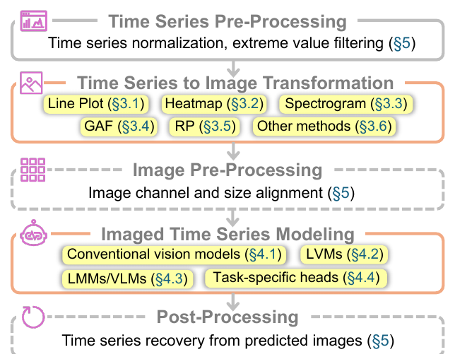
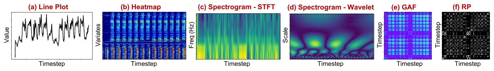
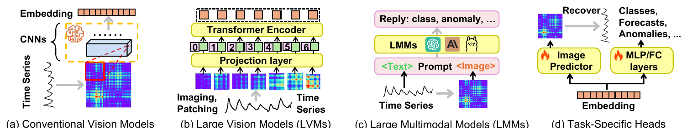

Harnessing Vision Models
for Time Series Analysis: A Survey
Jingchao Ni1, Ziming Zhao1, ChengAo Shen1, Hanghang Tong2, Dongjin Song3, Wei Cheng4, Dongsheng Luo5, Haifeng Chen4
1University of Houston 2University of Illinois at Urbana-Champaign 3University of Connecticut 4NEC Laboratories America 5Florida International University

Time series analysis has evolved from traditional autoregressive models to deep learning, Transformers, and Large Language Models (LLMs). While vision models have also been explored along the way, their contributions are less recognized due to the predominance of sequence modeling. However, challenges such as the mismatch between continuous time series and LLMs' discrete token space, and the difficulty in capturing multivariate correlations, have led to growing interest in Large Vision Models (LVMs) and Vision-Language Models (VLMs). This survey highlights the advantages of vision models over LLMs in time series analysis, offering a comprehensive dual-view taxonomy that answers key research questions like how to encode time series as images and how to model imaged time series. Additionally, we address pre- and post-processing challenges in this framework and outline future directions for advancing the field.
Taking a closer inspection reveals more advantages favoring LVMs over LLMs. There is an inherent relationship between images and time series — each row or column in an image (per channel) is a sequence of continuous pixel values, so by pre-training on massive images LVMs may have learned important sequential patterns such as trends, periods, and spikes, whereas LLMs are pre-trained on discrete tokens and thus are less aligned with continuous time series. Instead of using the channel-independence assumption to individually model each variate in a multivariate series, some imaging methods can naturally represent it, enabling explicit correlation encoding. When prompting LLMs, existing methods often struggle with properly verbalizing a long sequence (or a matrix) of floating numbers, which may be limited by the context length or induce high API costs; in contrast, existing works find that using LVMs on imaged time series is more prompt-friendly and less API-costly. And some imaging methods can encode long time series in a compact manner, thus have a great potential in modeling long-term dependency.
This survey focuses on methods that transform time series to images, namely imaged time series, and then apply vision models on the imaged time series for tackling time series tasks, such as classification, forecasting and anomaly detection. It is noteworthy that methods on videos or sequential images do not belong to this category because they don't transform time series to images. A thorough review of relevant works is absent in the existing literature to the best of our knowledge; in light of this, we comprehensively investigate the traditional and the state-of-the-art (SOTA) methods.
We propose a taxonomy from the two views of Time Series to Image Transformation and Imaged Time Series Modeling. For the former, we discuss 5 primary methods for imaging univariate or multivariate time series, and remark on their pros and cons.

Line Plot a straightforward way for visualizing a univariate series for human analysis
(e.g., stocks, power consumption). The simplest approach is to draw a 2D image with the
x-axis representing time steps and the y-axis representing time-wise values, with a line
connecting all values of the series over time. This image can be either three-channel (i.e.,
RGB) or single-channel as the colors may not be informative; ForCNN even uses a
single 8-bit integer to represent each pixel for black-white images. So far, there is no
consensus on whether other graphical components, such as legend, grids and tick labels, could
provide extra benefits in any task. For example, ViTST finds these components
are superfluous in a classification task, while TAMA finds grid-like auxiliary
lines help enhance anomaly detection.
Heatmap visualizes the magnitudes of the values in a matrix using color. It has been
used to represent the matrix of a multivariate series as a one-channel variate-by-time image;
TimEHR extends this to irregular multivariate series, where the intervals
between time steps are uneven, by grouping the uneven time steps into uniform bins. In
contrast, VisionTS uses Heatmap to visualize a univariate series: it segments a
length-T series into subsequences of one period, stacks them into a matrix, and replicates
the channel 3 times to form a grayscale image for input to an LVM. In this paper, the name
Heatmap refers specifically to images that use color to visualize the (normalized) values in
a univariate or multivariate series without performing other transformations.
Spectrogram a visual representation of the spectrum of frequencies of a signal as it varies with time, extensively used for analyzing audio signals. Since audio signals are a type of univariate series, a spectrogram can be considered as a method for imaging one. A common format is a 2D heatmap image with the x-axis representing time steps and the y-axis representing frequency, a.k.a. a time-frequency space; each pixel in the image represents the (logarithmic) amplitude of a specific frequency at a specific time point. Typical methods for producing a spectrogram include Short-Time Fourier Transform (STFT), Wavelet Transform, and Filterbank. Compared to STFT, which uses a fixed window size, Wavelet Transform allows variable wavelet sizes — a larger size for more precise low frequency information.
Gramian Angular Field was introduced for classifying univariate series using CNNs, then extended to an imputation task, and also applied to financial time series forecasting. Given a univariate series, the first step is to rescale each value to within [0, 1] (or [−1, 1]). This range enables mapping it to polar coordinates by an arc cosine, with a radius encoding the time stamp. Two types of GAF, Gramian Sum Angular Field (GASF) and Gramian Difference Angular Field (GADF), exploit the pairwise temporal correlations in the series. The outcome is a T × T matrix, and a GAF image is a heatmap on it with both axes representing time.
Recurrence Plot encodes a univariate series into an image that captures its periodic patterns by using its reconstructed phase space. The phase space can be reconstructed by time delay embedding — a set of new vectors, where the time delay and the dimension of the phase space are both hyperparameters. With those vectors, an RP image measures their pairwise distances and applies the Heaviside step function to a threshold, generating a binary matrix whose entry is 1 if two vectors are sufficiently similar, producing a black-white image. An advantage of RP is its flexibility in image size by tuning the dimension and the delay. Some works omit the thresholding and use the distances themselves to produce continuously valued images to avoid information loss.
Other methods Markov Transition Field (MTF) is a matrix encoding transition
probabilities among Q time segments, used to visualize a univariate series.
ImagenTime stacks the delay embeddings into a matrix for visualizing a univariate
series; MSCRED applies heatmaps to the correlation matrices of a d-variate series
for anomaly detection; earlier work proposes Bitmaps to image discretized series and defines
distances among them. Some methods use a mixture of imaging methods for richer
representations, e.g., stacking GASF, GADF, and MTF into a 3-channel image, while
FIRTS combines GASF, MTF, and RP. These multi-view representations have shown
greater robustness than single-view images in these works for classification tasks.
How to model multivariate series Heatmap can be used to visualize the variate-time matrices of a multivariate series, where correlated variates should be spatially close to each other. Line Plot can be used to visualize one by plotting all variates in the same image or combining all univariate images to compose a bigger image, but these methods only work for a small number of variates. Spectrogram, GAF and RP were designed specifically for univariate series. For these methods and Line Plot, which are not straightforward in imaging multivariate series, the general approaches include using the channel independence assumption to model each variate individually, or stacking the images of d variates to form a d-channel image. However, the latter does not fit some vision models pre-trained on RGB images which require 3-channel inputs.
| Method | TS-Type | Advantages | Limitations |
|---|---|---|---|
| Line Plot | UTS, MTS | matches human perception of time series | limited to MTS with a small number of variates |
| Heatmap | UTS, MTS | straightforward for both UTS and MTS | the order of variates may affect their correlation learning |
| Spectrogram | UTS | encodes the time-frequency space | limited to UTS; needs a proper choice of window/wavelet |
| GAF | UTS | encodes the temporal correlations in a UTS | limited to UTS; O(T²) time and space complexity |
| RP | UTS | flexibility in image size by tuning the dimension and the delay | limited to UTS; information loss after thresholding |
A summary of the five primary methods for transforming time series to images. TS-Type denotes type of time series: UTS is a univariate time series, MTS a multivariate one.
With image representations, time series analysis can be readily performed with vision models. We classify the existing methods by conventional vision models, LVMs and LMMs, and discuss their strategies on pre-training, fine-tuning, prompting, and the designs of task-specific heads.

Conventional vision models Following traditional image classification, a K-NN classifier has been applied on the recurrence plots of time series, and an ensemble of fundamental classifiers such as SVM and AdaBoost on the Line Plots, for time series classification. As an image encoder, CNNs have been widely used for learning image representations; different from using 1D CNNs on sequences, 2D and 3D CNNs can be applied on imaged time series. More frequently, ResNet, Inception-v1 and VGG-Net have been used on Line Plots, Heatmap images, RP images, GAF images, and even a mixture of GAF, MTF and RP images. For time series generation tasks, GAN frameworks of CNNs and a diffusion model with U-Nets have also been explored. Due to their small to medium sizes, these models are often trained from scratch using task-specific training data; meanwhile, fine-tuning pre-trained vision models has already been found promising in cross-modal knowledge transfer for time series anomaly detection and forecasting.
Large Vision Models Vision Transformer (ViT) has inspired the development of modern
LVMs such as Swin, BEiT and MAE. ViT splits an image into patches of fixed size, then embeds
each patch and augments it with a positional embedding; the vectors of patches are processed
by a Transformer as if they were token embeddings. Compared to CNNs, ViTs are less
data-efficient, but have higher capacity, so pre-trained ViTs have been explored for modeling
imaged time series. AST fine-tunes DeiT on the filterbank spectrogram of audios
for classification tasks and finds ImageNet-pretrained DeiT is remarkably effective in
knowledge transfer. VisionTS attributes LVMs' superiority over LLMs in knowledge
transfer to the small gap between the pre-trained images and imaged time series; it finds
that with one-epoch fine-tuning, MAE becomes the SOTA time series forecaster on some
benchmark datasets. There are also initial efforts in pre-training ViT architectures with
imaged time series: SSAST introduced a masked spectrogram patch prediction
framework for pre-training ViT on a large dataset, AudioSet-2M, and ViTime
generates a large set of Line Plots of synthetic univariate series for pre-training ViT,
which was found superior over TimesFM in zero-shot forecasting tasks on benchmark datasets.
Large Multimodal Models As LMMs get growing attention, some notable LMMs such as
LLaVA, Gemini, GPT-4o and Claude-3 have been explored to consolidate the power of LLMs and
LVMs for time series analysis. Since LMMs support multimodal input via prompts, methods in
this thread typically prompt LMMs with textual and imaged representations of time series, and
instructions on what tasks to perform. InsightMiner is a pioneer work that uses
the LLaVA architecture to generate texts describing the trend of each input univariate series;
similarly, other work adopts the LLaVA architecture for multivariate classification, encoding
a series by the visual embeddings of the stacked Line Plots of all variates while the matrix
is also verbalized in a prompt as the textual modality. Moreover, zero-shot and in-context
learning performance of several commercial LMMs have been evaluated for audio classification,
anomaly detection, and some synthetic tasks, where the image and textual representations of a
query time series are integrated into a prompt; for in-context learning, these methods inject
the images of a few example time series and their labels into an instruction to prompt LMMs
for assisting the prediction of the query time series.
Task-specific heads For classification tasks, most of the methods in the table below adopt a fully connected (FC) layer or multilayer perceptron (MLP) to transform an embedding into a probability distribution over all classes. For forecasting tasks, there are two approaches: using an MLP/FC layer to directly predict, from the embedding, the time series values in a future time window; or predicting the pixel values that represent the future part of the time series and then recovering the time series from the predicted image. Imputation and generation tasks resemble forecasting as they also predict time series values, so the second approach has been used for imputation and generation as well. When using LMMs for classification, text generation, and anomaly detection, most of the methods prompt LMMs to produce the desired outputs in textual answers, circumventing task-specific heads.
Time series normalization Vision models are usually trained on standardized images. To
be aligned, the images introduced above should be normalized with a controlled mean and
standard deviation, as has been done on spectrograms. In particular, as Heatmap is built on
raw time series values, the commonly used Instance Normalization can be applied on the time
series as suggested by VisionTS, since it shares similar merits as
standardization. Using Line Plot requires a proper range of y-axis: in addition to rescaling
time series, ViTST introduced several methods to remove extreme values from the
plot. GAF requires min-max normalization on its input, as it transforms time series values
within [0, 1] to polar coordinates. In contrast, input to RP is usually normalization-free as
an ℓ2 norm is involved before thresholding.
Image alignment When using pre-trained models, it is imperative to fit the image size to the input requirement of the models. This is especially true for Transformer based models as they use a fixed number of positional embeddings to encode the spatial information of image patches. For 3-channel RGB images such as Line Plot, it is straightforward to meet a pre-defined size by adjusting the resolution when producing the image. For images built upon matrices such as Heatmap, Spectrogram, GAF and RP, the number of channels and matrix size need adjustment: for the channels, one method is to duplicate a matrix to 3 channels, another way is to average the weights of the 3-channel patch embedding layer into a 1-channel layer; for the image size, bilinear interpolation is a common method to resize input images, and an alternative is to resize the positional embeddings instead of the images to fit the model to a desired input size. However, the interpolation in these methods may either alter the time series or the spatial information in positional embeddings.
Time series recovery Tasks such as forecasting, imputation and generation require predicting time series values. For models that predict pixel values of images, post-processing involves recovering time series from the predicted images. Recovery from Line Plots is tricky: it requires locating pixels that represent time series and mapping them back to the original values, which can be done by manipulating a grid-like Line Plot that comes with a recovery function. In contrast, recovery from Heatmap is straightforward as it directly stores the predicted time series values. Spectrogram is underexplored in these tasks and it remains open on how to recover time series from it; the existing work uses Spectrogram for forecasting only with an MLP head that directly predicts time series. GAF supports accurate recovery by an inverse mapping from polar coordinates to normalized time series. However, RP lost time series information during thresholding, thus may not fit recovery-demanded tasks without using an ad-hoc prediction head.
To highlight the taxonomy, we defer the discussion on the desiderata of pre- and post-processing to the end of this survey. For comparison, the table below summarizes the existing methods: the top part includes unimodal models, the bottom part includes multimodal models. As can be seen, the existing research on multimodal analysis (with vision modality) is much less than unimodal analysis, with a limited scope of time series tasks.
Taxonomy of vision models on time series. TS-Type denotes type of time series. TS-Recover denotes recovering time series from predicted images. *: the method has been used to model the individual variates of a multivariate series. ♮: a new pre-trained model was proposed in the work. ♭: when pre-trained models were unused, "Fine-tune" refers to train a task-specific model from scratch. Model column: CNN could be regular CNN, ResNet, VGG-Net, etc.
A Github repository is also maintained to provide up-to-date resources including our code of the imaging methods discussed above. We hope this survey could be an orthogonal complement to the existing surveys on Transformer, LLMs and foundation models for time series, and provide a complete view on the process of using vision models for time series analysis, so as to be an insightful guidebook to the developers in this area.
Fundamental understanding With various imaging methods available, most existing works
select them based on intuition. There remains a gap in both theoretical and empirical
understanding of questions such as which imaging methods fit which tasks and whether LVMs
truly learn patterns that make them better suited to time series than LLMs. Some existing
works evaluate multiple imaging methods, but in limited tasks; for example
ImagenTime compares the representation abilities of GAF, STFT and delay embedding
in a time series generation task. However, a thorough understanding to guide the development
of LVMs and LMMs across imaging methods is absent. This survey provides an initial comparative
discussion, and further empirical and theoretical investigations are essential to the synergy
between LVMs/LMMs and time series analysis.
Modeling the correlation of variates The existing methods for imaging multivariate series each come with limitations. Heatmaps encode spatial relationships, so the row order of variates affects how correlations are modeled, implying correlated variates should be spatially close to each other; similarly, Line Plots do not explicitly capture inter-variate correlations. Stacking one channel per variate into a d-channel input hinders the use of pre-trained LVMs, which expect 3-channel RGB inputs. Therefore, there is a need for more effective imaging or modeling techniques — e.g., incorporating graph neural networks on variates — to better capture correlations in multivariate series.
Advanced imaging for time series In addition to the basic methods introduced above,
advanced image representations hold promise. For example, InsightMiner adopts
seasonal-trend decomposition, which is often used to extract components that can serve as
inductive biases for time series models; extending this idea to decompose images such as
Spectrogram, GAF and RP into finer-grained components may enhance vision models'
effectiveness. Moreover, combining multiple imaging methods from different views, such as
frequency (Spectrogram), temporal structure (GAF), and recurrence patterns (RP), can provide
richer representations. FIRTS stacks images across channels for a classification
task, but is limited to images of the same size; modeling a mixture of arbitrary images by
methods such as multi-view learning may enable more flexibility.
Multimodal time series models and agents As can be seen from the table above, the existing research on multimodal analysis (with vision modality) is much less than unimodal analysis, with a limited scope of time series tasks. Given the existing LLMs for time series such as Time-LLM and S2IP, it is appealing to introduce vision modality to further boost the performance in wide tasks such as forecasting, classification and anomaly detection. Furthermore, the visual representation of time series provides the foundation for exploring multimodal AI agents for more intricate and nuanced tasks that require reasoning and interactions with environments, such as root cause analysis in AI for IT Operations (AIOps).
Vision-based time series foundation models A foundation model is a deep learning model trained on vast datasets that is applicable to a wide range of tasks. Recent time series foundation models, such as TimesFM, MOMENT, Chronos and Time-MoE, are mostly built upon LLM architectures and trained on raw time series. Given the potential of image representation, it is promising to explore vision models as a new architecture to revolutionize time series foundation models. This research direction not only leverages the advantages of LVMs — e.g., the prior knowledge extracted from the vast pre-training images — but also enables future development of vision-language foundation models for time series.
This is the first survey on leveraging vision models for time series analysis, whose general process structures the survey. We propose a new taxonomy consisting of imaging and modeling methods for time series, and discuss the pre- and post-processing steps as well. Each category encompasses representative methods and relevant remarks.
@inproceedings{ni2025harnessing,
title = {Harnessing Vision Models for Time Series Analysis: A Survey},
author = {Ni, Jingchao and Zhao, Ziming and Shen, ChengAo and Tong, Hanghang and Song, Dongjin and Cheng, Wei and Luo, Dongsheng and Chen, Haifeng},
booktitle = {Proceedings of the Thirty-Fourth International Joint Conference on Artificial Intelligence},
year = {2025}
}